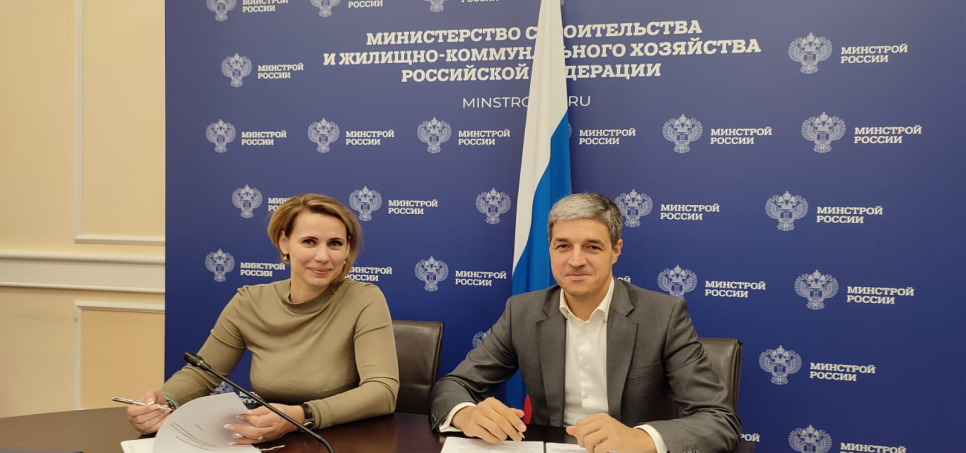

«РосКапСтрой» и «РТ-Инфраструктура» договорились о сотрудничестве
Соответствующее соглашение было подписано 20 сентября директором ФАУ "РосКапСтрой" Юлией Максимовой и генеральным директором «РТ-Инфраструктурные проекты» Дмитрием Школьным.
Предметом соглашения станет сотрудничество сторон в области научно-технической, образовательной деятельности, развитие информационно-аналитического мониторинга, реализацию совместных образовательных проектов и программ по внедрению передовых технологий в сфере водоснабжения и водоотведения, технического обследования систем водоснабжения и водоотведения, эффективности использования водных ресурсов.
В первую очередь речь идет о системе Quality map, которая представляет собой свод достоверной аналитики о состоянии объектов, степени их износа, о коммерческих и технических потерях в сетях, обеспечивает формирование отчетных форм по выполненным работам из любой точки мира, а также визуализирован единый план инженерных сетей.
Модернизация и строительство канализационных очистных сооружений, реконструкция объектов и сетей водоснабжения и водоотведения в стране осуществляется в рамках федеральных и региональных целевых программ. Контроль над ходом реализации большинства таких проектов осуществляет ФАУ "РосКапСтрой". Связи с этим Максимова подчеркнула необходимость использования информационно-аналитических инструментов ведения онлайн-мониторинга состояния объекта.
По итогам встречи принято решение о совместном пилотном проекте в рамках масштабной работы по модернизации канализационных очистных сооружений, развернутой на территории республики Дагестан. Напомним, власти республики совместно с Минстроем России проводят мероприятия по оптимизации проектных решений для комплексного развития канализационной системы в населенных пунктах Дагестана: корректировка проектно-сметной документации, изучение оптимальных технологий очистки сточных вод. В связи с чем отмечена целесообразность использования технологий цифрового моделирования и информационно-аналитических систем для управления и мониторинга реализации проекта.